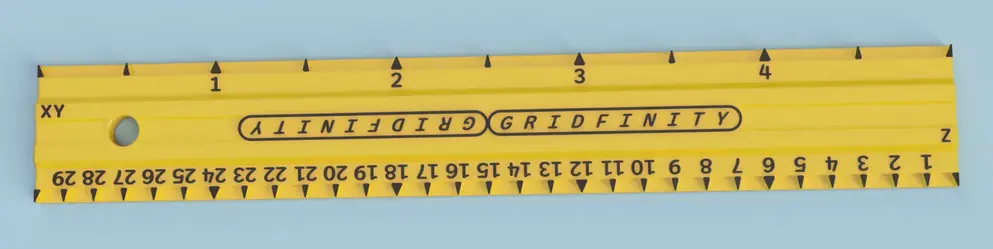

gridfinity.tools
a collection of tools that seem useful for Gridfinity users and designers. Maintained by Timothy J. Aveni. Contribute on GitHub.
Resources
Zack Freedman's video, introducing Gridfinity

The /r/gridfinity subreddit, a community for discussing Gridfinity
gridfinity.xyz, a community-run website with some details about Gridfinity
gridfinity.wiki, a website run by community member Tim Krause
Generators
To use Gridfinity, you'll need baseplates and then stuff to put on the baseplates. These come in standard sizes so that all Gridfinity modules are compatible with each other.
Many modules are custom-designed to hold particular objects, but you can also download and print generic bins to store piles of objects like screws.
You can find downloadable baseplates or bins in various sizes, but using a generator lets you specify exactly the size you need for a particular situation and customize additional parameters (like the number of subdivisions in a bin).
Bin generators are handy even if you want to design your own custom modules; you can use a generator to create a solid bin, then use CAD software to make cutouts that hold your objects.
Web-based
Web OpenSCAD Customizer, a web-based OpenSCAD customizer for bins by Jamie. Powered by gridfinity_openscad.
Open-source, GPL licensed code. See GitHub.
This uses OpenSCAD within the browser, so all the bin generation happens on your computer without needing to install OpenSCAD. Since there's no server, generating models, it tends to be reliable.
A bin and baseplate generator from Perplexing Labs. Powered by a number of backends, including gridfinity-rebuilt-openscad and gridfinity_extended_openscad.
Proprietary software: not open-source. Still quite handy!
Note that (as of August 2024) the backing server occasionally hangs, and retrying typically doesn't work for the same grid dimensions; you'll need to change some parameters or look elsewhere.
OpenSCAD
OpenSCAD is a free, open-source downloadable CAD program that uses code to define models. Below are code packages that can be used to generate any Gridfinity bin or base, with various customizations (e.g. the number of subdivisions in the bin).gridfinity-rebuilt-openscad, my preferred implementation of bins and baseplates by kennetek.
Open-source, MIT licensed code.

gridfinity_openscad, a Gridfinity implementation by Jamie for bins and baseplates.
Open-source, MIT licensed code.
gridfinity_extended_openscad, a Gridfinity implementation by Chris Heazlewood for bins and baseplates.
Open-source, GPL licensed code (was MIT until 2024-12-26).
FreeCAD
FreeCAD Gridfinity Workbench by Stu142 can be used in FreeCAD and is available under the LGPL license.
Other
I haven't found a generator for Clickfinity baseplates, but I thought you should know about them anyway. These are originally by jerrymk.

These are baseplates that, rather than holding modules in place using magnets, have tensioned “clicky” arms that are compatible with standard bins. I've never tried them, since I mostly print in PLA, which doesn't like to be held under constant tension like this.
Although there's no generator, there are some premade STL files for baseplates of all rectangular sizes between 1x1 and 7x7. You can download the Fusion 3D file if you want to create further baseplate sizes, but this requires that you install proprietary (non-open-source) software.
There's also a rebuild by FPVSmitty that comes with STEP files.
None of the Clickfinity plates seem to be available under open-source licenses.
Magnets
If you affix magnets to your baseplates and to your bins (or other Gridfinity modules), you get some extra grip. The idea is that every base on a bin will have four magnets on the corners (e.g. a 3x2 bin, containing 6 gridfinity bases, contains 24 magnets), and every cell in a baseplate has a matching four magnets.
Magnets are handy for baseplates in drawers or toolboxes, where the movement could cause bins to slip, though you might find that your bins aren't at much risk of slipping anyway.
Naturally, to keep things interchangeable, you want to make sure all of your magnets are facing the same direction, for all of your bins and baseplates. If you have a buddy who's also into Gridfinity, make sure the two of you are using the same standard so you can trade modules!
There's no one standard for magnet polarity, unfortunately, but the lightweight consensus seems to be that the magnet's north pole faces upwards; this is the standard I've settled on. This means that if you're looking downwards at a baseplate, you should be seeing the north poles of the magnets, and if you're looking directly at the bottom of a bin, you should see its magnets' south poles, so that when you place the bin upright, its north poles are facing the ceiling. This explanation might seem overly pedantic, but you'll understand my meticulousness after you've messed up your first few bins :)
One strategy to save on magnets is to use a steel plate under your baseplate, especially if you're using the “thin” type of baseplate (which will have the bottom of the bin right up against the underside of the baseplate). This will also solve polarity issues, but you should follow a polarity standard anyway!
I've found that, with magnets, most modules can stay in place even when the baseplate is held upside down; the stuff inside the bins, on the other hand, will fall on the floor.
The Gridfinity standard magnet size is 6mm in diameter and 2mm thick — or, at least, that's the general vibe of the specification. There are a few things complicating this:
- Magnets sometimes run big or small (I think slightly small is the trend). This means that models designed for a “press fit” (where you just push the magnet into a round hole at the bottom of a bin and hope it stays there) might not actually hold magnets in very well.
- 3D printers will sometimes print holes big or small, depending on things like your slicer settings and the filament properties.
- Although the placement of magnets is more or less standardized, the means by which they're held in place varies depending on who designed the module. Not all bins are designed for a press fit; some designs for bin bases, for example, have you slide magnets in from the side, with or without glue to hold them in.
- Similarly, some tools will default to e.g. 6.5mm diameter magnet holes, presumably to keep them easier to insert.
- If you print magnet holes with support material, you need to clean that material out really well to get magnets to fit.
Some people use a soldering iron to heat-insert magnets into holes that are a little undersized. This works (though it seems a little annoying to do), but magnets can lose their magnetism with heat applied. Does this end up mattering? I'm not sure, but enough people caution against it that I haven't bothered trying.
For a while, I tried hot-gluing magnets into bins, but they don't last long like that (remember, any adhesive solution needs to be stronger than the magnets themselves!). What I've settled on recently is capturing the magnets within the 3D print on a bin, putting a layer or two down, printing a hole, pausing the print after the appropriate layer, dropping the magnet in, and then continuing the print, bridging more plastic on top of the hole (without a ferrous nozzle, of course!). The downside of this approach is that the magnets will be weaker with a couple layers of plastic holding them away from the baseplate, but at least they're consistent; I've had glued magnets that were inset too much or (worse) that poked out a bit, which doesn't happen here. I've also heard people complain of rattling magnets with this approach (since you don't want to make the holes too short, or you'll crash your 3D printer head into the magnets), but I've only rarely had that happen.
You can typically buy magnets on Amazon or Aliexpress (here's an affiliate link to the Amazon magnets I most recently bought; they're fine, though I haven't measured them for precision). I've been spending about USD $0.04 per magnet, including shipping. Is it worth the money, to add four of these to every 1x1 bin and four more to the baseplate? I dunno, but I do it anyway, because magnets are cool.
Gridfinity Rebase
Once you have a magnet strategy you're happy with — whether you're gluing them, press-fitting them, capturing them, or just omitting them altogether — you'll want all of your printed modules to use the same strategy. That way, you can dial in your settings for your particular printer, filament, and magnets, and stop worrying about the details.
Unfortunately, every module designer seems to have their own opinion on what magnet strategy to use. If you're frequently using others' modules, or just using a generator that doesn't support your favorite technique, you'll want to modify each base on the STL files you download.
Gridfinity Rebase is a tool I built that handles this automatically. You import an STL file you want to print, then import an STL file with the kind of base you like, and Rebase will find every base in the first file, cut it out, and replace it with your preferred “gold standard” base.
This is free, open-source software (GPL licensed). It uses the web build of OpenSCAD to perform CAD operations in your browser (no files leave your machine).
Magnet jigs
Magnet jigs are (3D printable) tools that help you insert magnets into bins and baseplates. They typically serve two purposes:
- Help you get the polarity right every time. After printing a jig, you glue or otherwise insert a permanent “reference” magnet into the jig, then place future magnets on the jig, aligning to the reference magnet, in some way that helps you insert them where they need to be. You need to be pretty clever to consistently insert the reference magnet correctly; I've come to realize that I'm simply not smart enough to do this right more than 50% of the time, so I just slap together a jig and hope it's right (and disassemble or toss it if not).
- Help you hold the magnet as you insert it, so that you don't fat-finger and flip the magnet while trying to insert it. Dropping a magnet normally gets it stuck on some other magnet, which is always a pain.
My favorite magnet jig is this plunger-style jig by ichisaur. Magnets line up quite nicely on the plunger, and then you push the plunger away from the reference magnets before removing the device, so that the magnets don't stay stuck to the jig.
It's got these little feet around the edge that grip the bin base, which are kind of satisfying to use, but they do sometimes cause a “click” as you're inserting or removing the jig, which can create undesirable vibrations; the feet also make it hard for the jig to fit in a 1x1 Gridfinity square.
Personally, I have the jig reference magnet set “backwards”, since I insert magnets during the print from the top side of the bin, rather than coming at the bin from the bottom after it's printed. This jig works fine for that.
I've also used this alignment tool by pyrho, as a simple polarity checker.
Unfortunately, it does have the word “Bin” or “Base” debossed (to be used depending on the polarity), which is bad for someone like me who is incapable of getting the darn polarity right on the first try. I had to drill a hole into the opposite side of the magnet press-fit so I could push it out and try again. Consider just writing on the print which side it's for after inserting the magnet.
This isn't a jig, but it's related to getting polarities right: your cell phone's compass can function as a magnet pole detector. Look for an app that can tell you which pole of a magnet you're pointing your phone at, then keep very careful track of which pole is which. It helps to mark one side with a permanent marker (I tend to mark the north side), though try not to rub the mark off..!
Rulers
You can print Gridfinity rulers to measure things in Gridfinity units. Useful, I guess, if you're trying to make a holder for a custom object and you want to get a quick sense of how big it needs to be, or if you want to know how big of a baseplate you can fit in a drawer.
Personally, I just use an actual baseplate when I'm eyeballing, or a caliper or measuring tape when I'm being precise. Still, it's a Gridfinity tool, so I thought I'd link it.
This ruler by loftshed (Pete) will do the trick.
If you're going to be making custom modules to fit objects in your life, you'll need a caliper. This is the Vernier caliper I bought off Amazon, and it works fine (I upgraded after breaking a crappy digital caliper a few times).
Affiliate link to the caliper, because why would I link to Amazon and not take a cut?